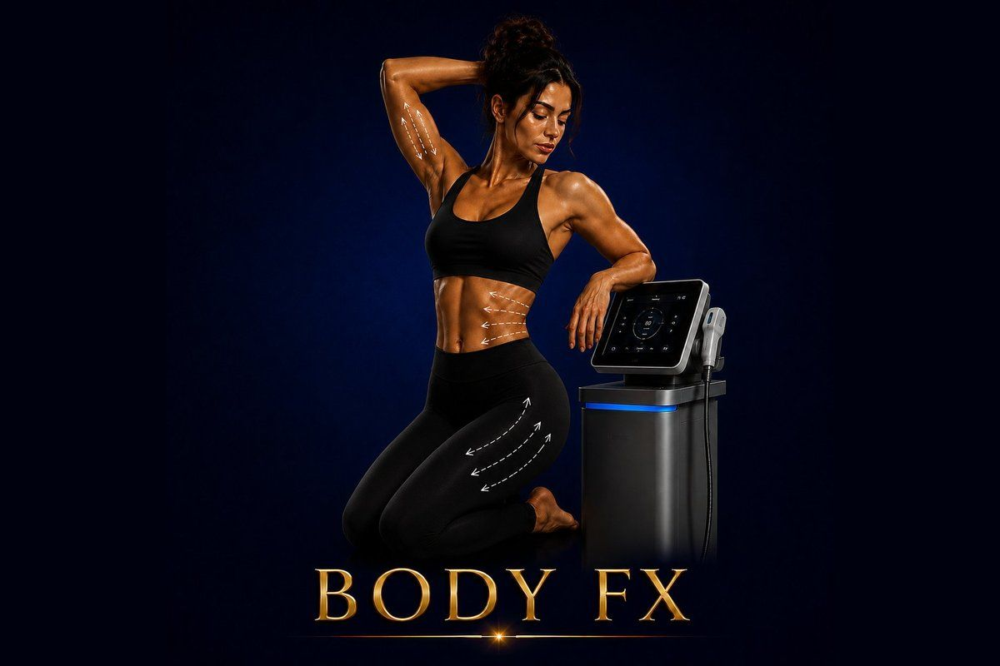

Body Shaping
InMode
✓ Full medical content — verified for SEO and patient information.

About
Body FX is a non-invasive body contouring device from InMode — the same medical aesthetic company behind BodyTite, Morpheus8, and Forma. It combines three powerful technologies in one device: radiofrequency (RF) heating, negative pressure (vacuum), and high-voltage pulses, all working together to reduce stubborn fat, improve cellulite appearance, and tighten loose skin on the body. Unlike surgical or minimally invasive options, Body FX requires no incisions, no needles, no anesthesia, and no downtime — you can walk in, complete a session, and walk out to resume your normal day. The device is FDA-approved and globally recognized as a safe, effective non-invasive contouring platform. Body FX works best as part of a structured series of sessions, where each treatment builds on the last to gradually reduce fat thickness, improve skin texture, and refine body contour over time.
Why It Works
The Process
60 minutes depending on the size of the treatment area: 1
Consultation & area mapping Your doctor evaluates your goals, identifies target zones (abdomen, thighs, arms, etc.), and customizes the treatment protocol. 2
Cleansing & prep The treatment area is cleansed and a thin layer of conducting gel is applied for smooth, even RF delivery. 3
Body FX application The Body FX handpiece is moved across the target area, simultaneously delivering RF heat to warm the deeper layers, negative pressure (vacuum) to lift the tissue and improve circulation, and brief high-voltage pulses to disrupt fat cells
The skin gradually warms to therapeutic temperature, and you'll feel a warm massage with gentle suction. 4
Finishing Gel is removed, soothing skincare is applied
You can return to work, exercise, or daily activities immediately
Body FX is most effective as a structured course of multiple sessions, typically performed once a week
Your doctor will design a plan based on your goals and target areas
Who It's For
Safety First
Quality You Can Trust
Treatment Comparisons
Clatuu Alpha freezes and permanently destroys fat cells — strong fat reduction but no skin tightening. Body FX combines RF heating, vacuum, and electrical pulses for gradual fat reduction PLUS skin tightening in one device. Best combined: Clatuu Alpha for serious fat removal, Body FX for refinement and skin tightening.
Tesla Former builds muscle through electromagnetic stimulation. Body FX reduces fat and tightens skin. They address completely different layers and goals — used together they create comprehensive sculpting (Tesla Former for muscle, Body FX for fat and skin).
EMTONE is purpose-built for cellulite — combining RF with targeted pressure waves. Body FX also improves cellulite, but as one part of a broader contouring effect. For severe cellulite, EMTONE is more focused; for general body refinement with mild cellulite, Body FX is the more versatile choice.
BodyTite is a minimally invasive procedure (tiny incision, local anesthesia) that liquefies and aspirates fat AND tightens skin — significantly stronger results in one session, but with days of downtime. Body FX is fully non-invasive with no downtime, but works gradually over multiple sessions. Many patients use Body FX for maintenance after a BodyTite procedure.
Morpheus8 Body uses RF microneedling for deeper skin remodeling and stronger collagen response — better for stretch marks and significant skin issues, but with a few days of downtime. Body FX is fully surface-based with no downtime — gentler, more about ongoing maintenance and fat reduction.
Investment
Body FX
The price of a Body FX session at Hollywood Clinic is set after a free consultation and depends on: Treatment area — single area (abdomen, thighs, arms) vs. multiple areas.
Final pricing is determined after a free consultation, because every case is different.
Book Free ConsultationWhy Hollywood Clinic
Dr. Sara Abdelhameed — Clinical Nutrition Consultant & Body Contouring Specialist, 12+ years of experience, 50,000+ women treated. The most experienced body contouring authority at Hollywood Clinic — ideal for structured Body FX plans combined with nutrition guidance
Dr. Rana Ibrahim Sultan — Clinical Nutritionist & Non-Invasive Aesthetic Specialist. Ideal for patients who want Body FX integrated into a wider non-invasive body and nutrition plan
Dr. Ehssan Rabie — Clinical Nutrition Specialist, 13 years at Kasr Al-Ainy. Ideal for medically-grounded body contouring plans where Body FX is part of a wider metabolic strategy
FAQ